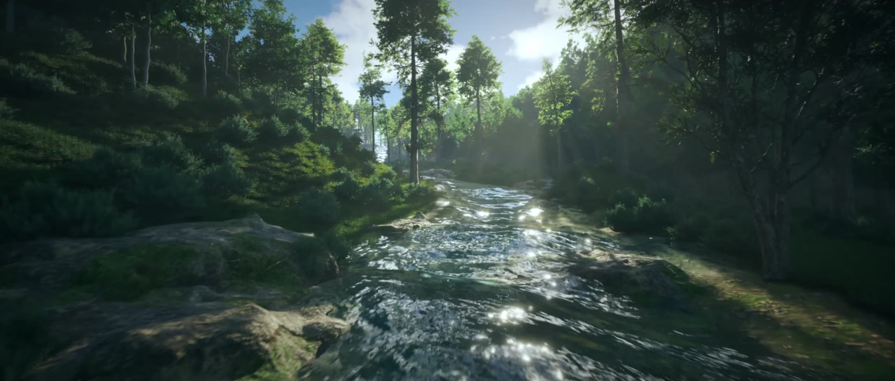

1:46 · 1440p
2026 · Environment film · New
Some Places Are Heard
A forest river followed from the water's edge, up through the mist, past an old log cabin and out to the sea. Built and rendered in Unreal Engine 5.8, then graded in DaVinci Resolve.
The sound is part of the place: the river grows louder and brighter as the camera nears the water, and falls to a distant hush as it pulls away.